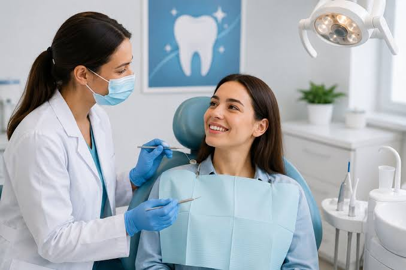

All-Ceramic Crowns
A tooth-colored option often considered when natural-looking appearance is important.
Ask About Ceramic CrownsDental crowns can help restore the shape, strength and appearance of a damaged or weakened tooth. Discover your options with personalized dental care.

A dental crown is a custom-made covering that fits over a tooth to restore its shape, strength and appearance. A dentist may recommend one when a tooth is significantly damaged, weakened or restored after certain dental procedures.
The right crown depends on your tooth, bite, oral health, appearance preferences and budget. Your dentist will examine your teeth and explain suitable options.
When clinically appropriate, a crown can help preserve a damaged tooth and improve how it functions. Your dentist will explain the expected benefits and any limitations before treatment.
May help protect a tooth that has lost significant structure.
Can help restore tooth shape and function when properly fitted.
Selected materials can be matched to the appearance of nearby teeth.

Your dentist will explain each stage and whether your treatment requires one or more visits.
The dentist checks your tooth, gums and bite to determine the most suitable treatment.
If a crown is appropriate, the tooth is prepared and an impression or digital scan may be taken.
The crown is checked for fit and bite, then secured according to the treatment plan.
Follow the dentist's instructions and attend any recommended review appointments.
Brush twice daily with fluoride toothpaste, clean between your teeth, avoid using teeth to open objects, and attend regular dental checkups. Contact your dentist if your crown feels loose, cracks or causes persistent pain.
Schedule a consultation with SmileCare Dental Clinic to discuss your tooth, explore crown materials and understand your treatment options.
Book Your Consultation